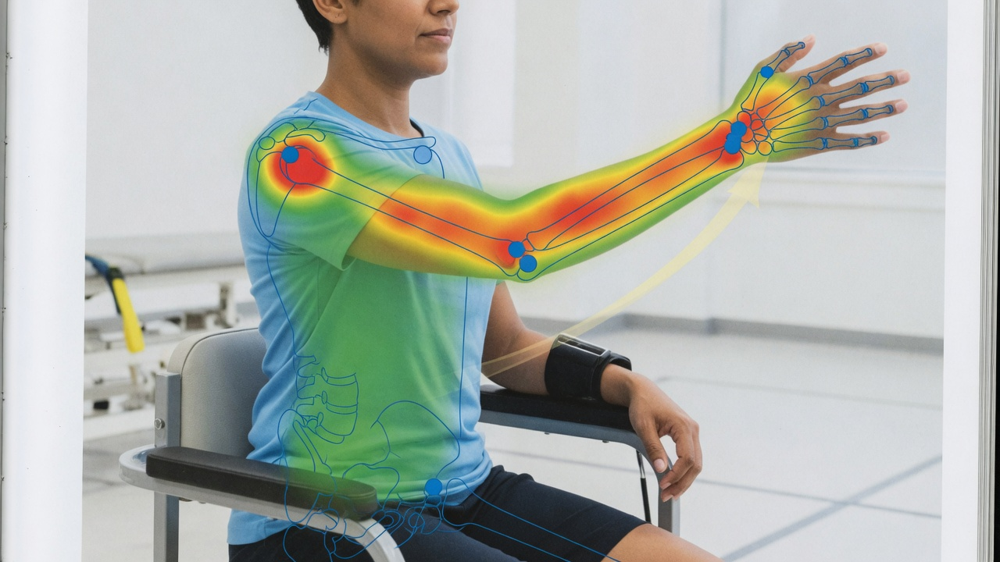
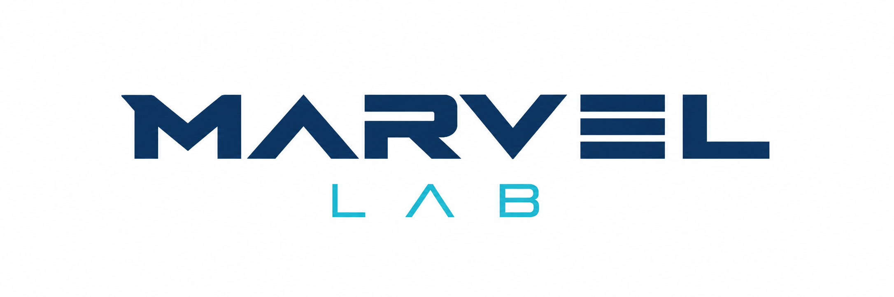

AI-driven Stroke Rehabilitation Systems and Assessment: A Systematic Review
S Rahman, S Sarker, AKMN Haque, MM Uttsha, MF Islam, S Deb
IEEE TNSRE, 2022 · cited by 116 Q1

MARVEL Lab is a research group in the Department of Robotics and Mechatronics Engineering at the University of Dhaka, directed by Dr. Sejuti Rahman. The lab builds learning systems that see, reason, and act: medical AI for rehabilitation and neurodevelopmental screening, graph models of human motion, sign-language robots, 3D and hyperspectral vision, and robot learning under uncertain physical contact.
Work sits at the intersection of computer vision, robotics, and healthcare. Students and alumni have published in IEEE TNSRE, AAAI, AAMAS, PLOS ONE, Pattern Recognition Letters, and related venues. This year planetary-mobility work from the lab was accepted at the IROS 2026 Space Robotics Workshop.

S Rahman, S Sarker, AKMN Haque, MM Uttsha, MF Islam, S Deb
IEEE TNSRE, 2022 · cited by 116 Q1

S Deb, MF Islam, S Rahman, S Rahman
IEEE TNSRE 30, 2022 · cited by 112 Q1


S Deb, S Rahman, S Rahman
AAAI 2024 · cited by 12
Graph models of exercise quality, stroke rehab assessment, autism screening from activity, and imaging-based diagnosis. Two IEEE TNSRE papers account for more than 200 citations.

Continuous Bangla sign translation, a low-cost humanoid interpreter, and personality-aware gesture generation on social robots.
Adaptive graph wavelets (AAAI 2024), rehab scoring, sign skeletons, and image memorability — the same joint-as-graph bias across domains.

Shape, reflectance, and illumination from a single multispectral view; zero-shot 3D recognition; eye-tracking; visual SLAM.

Code-mixed Bangla–English sentiment, on-site microplastic detection, and stereoscopic video quality with collaborators outside the rehab line.

Contact-rich control, including rover recovery from granular entrapment without a fixed maneuver catalog, and Sim2Real transfer.